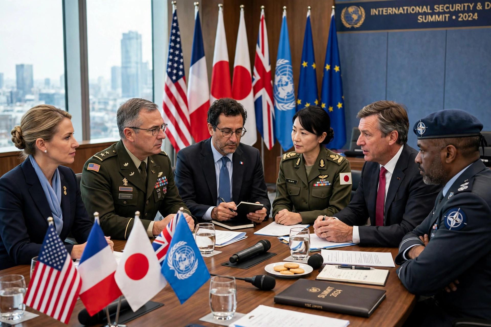

In international relations, smart power is the combination of hard power and soft power strategies. It is defined by the Center for Strategic and International Studies as "an approach that underscores the necessity of a strong military, but also invests heavily in alliances, partnerships, and institutions of all levels to expand one's influence and establish legitimacy of one's action".

The term was developed in response to criticism that soft power alone was insufficient to achieve foreign policy objectives. Joseph Nye popularised the concept, arguing that the most effective strategies combine coercive and economic instruments with attraction based on culture, values, and policies. The term gained prominence in United States foreign policy discourse when Secretary of State Hillary Clinton invoked "smart power" during her 2009 confirmation hearings as the guiding principle of the Obama administration's foreign policy.
Smart power strategies emphasise integrating defence, diplomacy, and development — sometimes called the "3 Ds" — as well as trade, aid, and public diplomacy. The choice and balance of instruments is meant to be tailored to the context, rather than relying on military force or attraction alone.